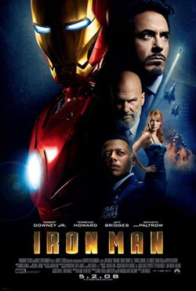
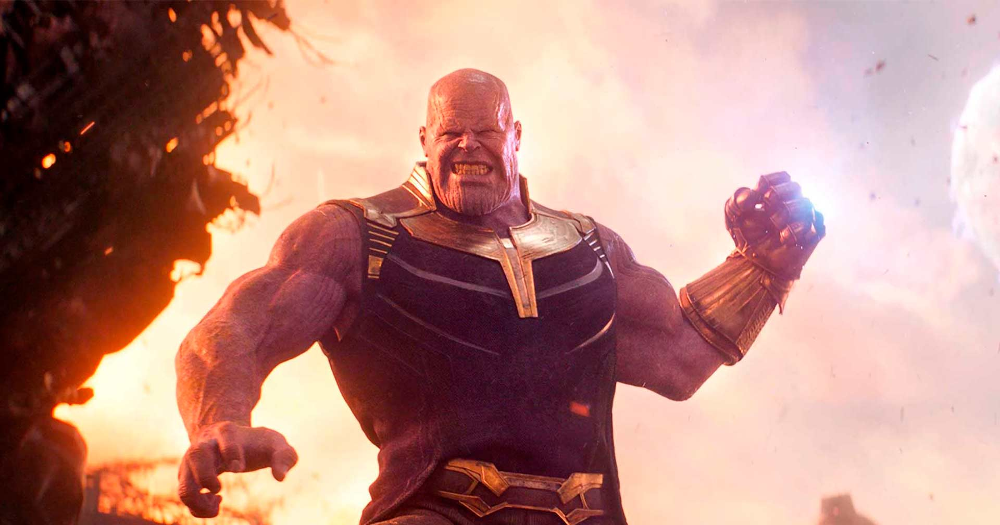
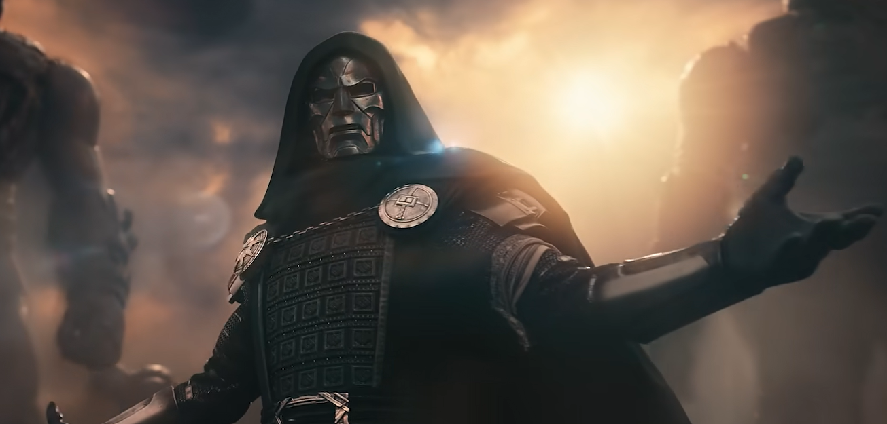
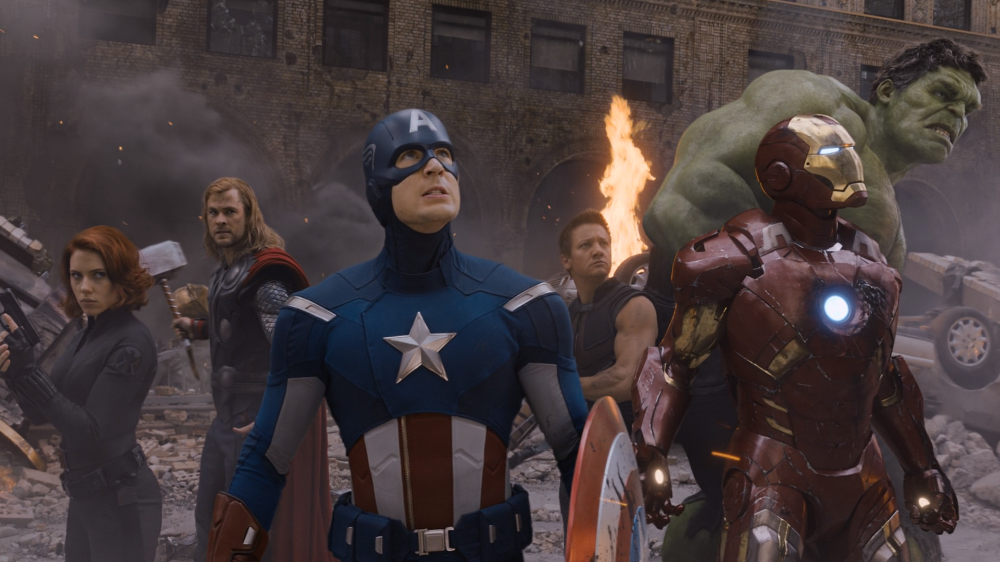

Universo Cinematográfico da Marvel (UCM) 🌠
O Universo Cinematográfico da Marvel, conhecido como UCM, reúne filmes e séries
que compartilham uma mesma história e estão conectados entre si.
Desde o lançamento de Homem de Ferro, em 2008, esse universo passou
por diferentes fases e apresentou dezenas de personagens e histórias.

Clique na imagem para saber mais.
Em seus filmes, a Marvel deixava uma cena pós créditos, que como o nome já diz,
eram cenas no final do filme que deixavam alguma pista sobre o próximo capítulo, como se
fosse um quebra cabeça que seus fãs deveriam montar aos poucos, fazendo
com que ficassem ansiosos para o próximo lançamento.
Desde então, a Marvel vem criando uma legião de fãs com essa estratégia.


